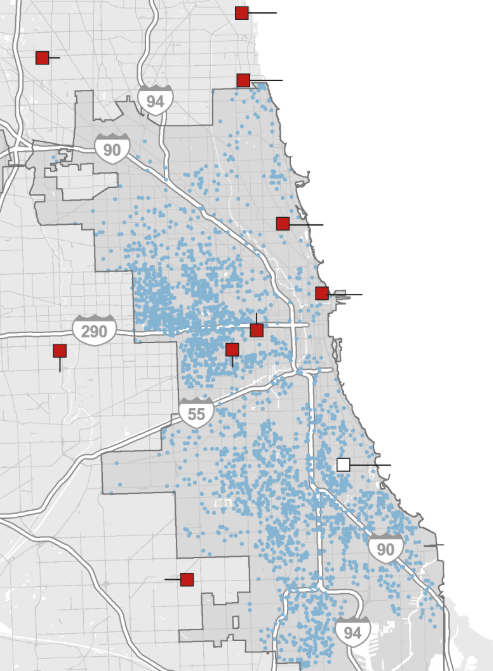

Trauma Care Access in Cook County
A Policy Memo: Reducing Geographic Disparities in Trauma Care Access in Cook County
A policy memo diagnosing geographic disparities in trauma care access in Cook County through a five-step sequential model and evaluating four policy alternatives using a weighted decision matrix.
Executive Summary
There are severe regional disparities in access to trauma care across Cook County. The southern region remains entirely without trauma care infrastructure, forcing patients to travel more than 20 minutes for care following a trauma incident. This memo diagnoses the issue using a five-step sequential model and evaluates four policy alternatives through a weighted framework: Effectiveness (40%), Feasibility (20%), Cost (20%), and Time to Implement (20%). The recommended option is a Decentralized Trauma Response Network — satellite units implementable within 6–12 months at $3.75–4.95M, far more cost-effective than a full trauma center at $20–50M annually.
Problem Definition
Since the closure of St. James Olympia Fields in 2008, the Southland has had no trauma center, forcing patients to be transported more than 20 minutes to reach appropriate care. A 2015 study by the Illinois Department of Public Health found that trauma patients injured more than five miles from a trauma center face a 23% higher risk of death. Progress on establishing a new center has stalled due to projected annual operating costs exceeding $20 million.

Figure 1. Geographic distribution of trauma centers (red squares) and incident density (blue dots) in Cook County. The southern region shows high incident density with no nearby trauma centers.
Problem Diagnosis Model
This issue can be structurally diagnosed through a five-step sequential process. Three stages were identified as key policy intervention points.
01
EMS Dispatch: Response times range 15–30 min in southern Cook County, well beyond the 8-min national standard.
02
Transport Decision: No trauma centers in the Southland forces EMS to transport 10–15+ miles to the nearest facility.
03
Patient Transport: Transport durations of 17–30 min. Conditions deteriorate in transit; fatalities occur en route.
Policy Alternatives
Alternative 01
Establishing a Trauma Center in the Southland
Full trauma center in the Southland. High effectiveness but costs $20–50M annually and takes 2–5 years to implement.
14 / 20Alternative 02 · Recommended
Decentralized Trauma Response Network
Satellite units providing stabilization and triage before transfer. Lower cost, implementable within 6–12 months.
20 / 20Alternative 03
EMS Resource Reallocation & Dispatch Protocol
Reallocate EMS to high-risk areas. Low cost and fast to implement but doesn't address infrastructure gaps.
18 / 20Alternative 04
Air Medical Transport System
Helicopter-based transport to bypass distance barriers. Effective but high operating costs and weather limitations.
16 / 20BOTEC Cost Estimate
First-year setup and operating cost for a single satellite trauma unit:
| Category | Items | Estimated Cost |
|---|---|---|
| Facility Renovation | ER expansion, infrastructure, HVAC | $650,000 – $950,000 |
| Medical Equipment | Trauma beds, monitors, diagnostics | $1,050,000 – $1,350,000 |
| Personnel (annual) | Physicians, nurses, paramedics, admin | $1,300,000 – $1,700,000 |
| Operational Costs | Supplies, utilities, maintenance, IT | $750,000 – $950,000 |
| Total | $3,750,000 – $4,950,000 | |
Decision Matrix
Alternatives were scored on four weighted criteria. Effectiveness was weighted most heavily (40%) given the primary goal of reducing mortality disparities.
| Alternative | Effectiveness (40%) | Feasibility (20%) | Cost (20%) | Time (20%) | Score |
|---|---|---|---|---|---|
| Satellite Units | 4 | 4 | 4 | 4 | 20 |
| EMS Reallocation | 2 | 4 | 5 | 5 | 18 |
| Air Transport | 4 | 3 | 2 | 3 | 16 |
| Trauma Center | 5 | 2 | 1 | 1 | 14 |
Policy Evaluation
1. Establishing a Trauma Center in the Southland
14 / 20Effectiveness · 5pts — Significantly reduces transport time and mortality. Relieves pressure on downtown centers.
Feasibility · 2pts — Complex approvals, land acquisition, staff recruitment. Lengthy multi-year process.
Cost · 1pt — $20–50M annually. High capital and operating burden for Cook County.
Time · 1pt — 2–5 years to full implementation.
2. Decentralized Trauma Response Network
20 / 20Effectiveness · 4pts — Triage, stabilization, pre-transfer care. Reduces transport time and improves outcomes.
Feasibility · 4pts — MOU-based agreements with existing centers. Administratively simpler than new construction.
Cost · 4pts — Significantly lower than a full center. Manageable operating expenses.
Time · 4pts — Operational within 6–12 months.
3. EMS Resource Reallocation & Dispatch Protocol
18 / 20Effectiveness · 2pts — Faster on-scene care but doesn't address infrastructure gaps.
Feasibility · 4pts — No hospital approvals needed. Administratively straightforward.
Cost · 5pts — Minimal cost. Primarily personnel redistribution.
Time · 5pts — Implementable within weeks.
4. Air Medical Transport System
16 / 20Effectiveness · 4pts — Bypasses traffic, significantly shortens prehospital time.
Feasibility · 3pts — FAA compliance, helipad construction, community concerns.
Cost · 2pts — $2–5M per helicopter annually.
Time · 3pts — 6–12 months, subject to regulatory approval.
Policy Recommendation
I recommend the implementation of a Decentralized Trauma Response Network by establishing satellite trauma units in the Southland region of Cook County. These units, in collaboration with major trauma centers, would provide core services such as initial emergency stabilization, triage, and pre-transfer care. Although not full-scale trauma centers, these facilities can enable timely interventions during the critical window following trauma, significantly increasing patient survival rates.
From a policy and administrative standpoint, this alternative is highly feasible and could be implemented within 6 to 12 months. Implementation should proceed through the following steps:
- The Cook County Board of Commissioners should formally prioritize trauma care equity and adopt a resolution supporting the establishment of satellite trauma units.
- MOUs should be signed between the County and existing trauma centers to designate appropriate partner hospitals in the Southland.
- Approval from the Illinois Department of Public Health must be obtained to verify that facility modifications comply with emergency medical service standards.
- Budget allocation should proceed in parallel. According to BOTEC, the total cost is estimated at $3,750,000–$4,950,000 — far more cost-effective than the $20–50M annual cost of a full-scale trauma center.
This option offers a realistic and phased solution to structural disparities by reducing transport times, enabling early stabilization, and expanding emergency service capacity in underserved, high-risk areas. Furthermore, it can be integrated with future interventions such as EMS resource reallocation or air medical transport systems, increasing its policy flexibility and long-term impact.